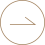

About
關於恆合
Us
HENG HO HISTORY
恆合機構 穿越歲月長河
【恆合機構】創立近40年來，始專注建築、從選擇捷運、地標性與景觀
兼具的一塊好地開始，到安全結構以及營造施工、建材設備與建築美學
皆是不計成本堅持，為台灣創意城市美學與生活空間持續努力。

-
【1979年民國六十八年】
七月,五位營建業專業人員,抱持一份熱忱及對營建業的喜愛,成立碩建營造工程有限公司為丙級營造廠,新生的喜悅,成長的開始。
-
1984
YEAR
【1984年民國七十三年】
七月,升等為乙級營造廠,全力的投入,經驗的累積。
-
1990
YEAR
【1990年民國七十九年】
升等為甲級營造廠,自日本購入2500潛盾鑽掘機承台北市政府衛生下水道污水放流工程。更多資源的投入、先進技術的開發,開拓更寬的營建版圖。
-
1996
YEAR
【1996年民國八十五年】
增資為新台幣壹億元整。
延攬東帝士營造遠東建設兩大堂建業帝國的資深技術及管理人員加入經營陣容,強化資本結構,確立組織規章制度,壯大團隊陣容,確立經營目標。 -
1997
YEAR
【1997年民國八十六年】
投資設立碁石建設股份有限公司,投入不動產開發市場。於台北縣三重市與金鳥蚊香公司合作興建廠辦大樓。
投資盛誼機械股份有限公司,在大面積深開挖的基礎領域中,確立領先的位置。 -
1998
YEAR
【1998年民國八十七年】
與大通建築經理股份有限公司結盟,在營建業不景氣的環境中,以墊款施 工方式,進行不動產清理處份的多項個案(金山蓬萊陵園後續工程、台中 大集合住宅),除了維持一定的業績長外,也兼顧了社會責任的擔當與回饋。
-
1999
YEAR
【1999年民國八十八年】
9月21日發生台灣史上最大地震,本公司即投入賑災行列,完成苗栗內灣國小及景山國小校舍及風雨操場整建工程。
基石建設股份有限公司與泰閣建設股份有限公司,合作開發新竹市中華路【sogo123】新建工程。
-
2002
YEAR
【2002年民國九十一年】
西進大陸市與重慶西南物流公司合作,開發重慶江津市舊市區改造,投資興建地標性超高層住商大樓。
-
2003
YEAR
【2003年民國九十二年】
承攬台展建設位於內湖【珠大樓】新建工程及台佳建設位於三重【嘉年】 新建工程。
承攬正文科技公司位於新竹湖口正文科技二廠新建工程。
另成立瑋石建設有限公司(資本額登記新台幣貳仟伍佰萬圓整),並至台北 縣新店市碧潭風景區興建【水雲間】住宅大樓。 -
2005
YEAR
【2005年民國九十四年】
承攬台展建設位於台北市士林區大南路【林新天地】住宅大樓新建工程。
另成立恆合建設有限公司(資本額登記新台幣壹仟萬圓整),於內湖三軍總 醫院附近四期重劃區購地,興建【天地一墅】別墅群。 -
2006
YEAR
【2006年民國九十五年】
承攬榮鼎建設位於台北市南港區【昆星鑽】住宅大樓新建工程。
承攬翔譽建設位於台北市中正區廈門街【第一名】住宅大樓新建工程。
恆合建設與新北市板橋區雙十路地主合作開發興建【沐夏會館】集合住宅大樓。 -
2008
YEAR
【2008年民國九十七年】
公司改組供購允信營造有限公司,並更名為恆合營造有限公司資本額增資至新台幣壹億元,正式加入本公司之營運團隊。碩建營造工程有限公司功成身退停業並走入歷史。
瑋石建設有限公司購置位於南港重陽重劃區土地興建【漱夏會館】集合住宅大樓。 -
2009
YEAR
【2009年民國九十八年】
承接921地震受災戶【台北市東星大樓後續工程,並於同年8月完工交屋。
成立新鵬建設股份有限公司,正式加入本機構之營運團隊。
恆合建設股份有限公司於台北市內湖區康寧街購置土地興建【Yes明湖】集合住宅大樓。 -
2010
YEAR
【2010年民國九十九年】
恆合建設股份有限公司購置位於新北市新店區土地興建【中興A計劃】 廠辦大樓,並於完工後將本機構企業總部遷至頂樓。
恆合營造有限公司承接元馥建設位於新北市中和區馥御集合住宅新建工程。
-
2010
YEAR
【2010年民國九十九年】
瑋石建設有限公司與台北市師大路地主合作興建【大師大】集合住宅大樓。
-
2013
YEAR
【2013年民國一O二年】
恆合建設股份有限公司與新北市三重區三民街地主合作開發興建【i世紀】集合住宅大樓。
瑋石建設有限公司於新北市汐區民族五街購置土地興建【瑋石登峰】集 合住宅大樓。 -
2015
YEAR
【2015年民國一O四年】
恆合建設股份有限公司與新北市新店區中華路地主合作開發興建【捷運風華】集合住宅大樓。
-
2016
YEAR
【2016年民國一O五年】
瑋石建設有限公司與台北市大同區重慶北路地主合作開發興建【天好運】集合住宅大樓。
-
2017
YEAR
【2017年民國一O六年】
恆合建設股份有限公司與台北市北投區承德路地主合作開發興建【恆合江山】 集合住宅大樓。
並在同年資本額增加至新台幣參仟捌佰萬元整。 -
2019
YEAR
【2019年民國一O八年】
瑋石建設有限公司與新北市新店區新生街地主合作開發興建【捷理仁】集合住宅大樓。
延攪恆毅建設董事長林俊榮及李岳建築師合作成立恆力建設股份有限公司,正式加入本機構之營運團隊。 -
2020
YEAR
【2020年民國一O九年】
恆合建設股份有限公司與台北市大安區羅斯福路地主合作開發興建【大安MONEY】集合住宅大樓。
-
2021
YEAR
【2021年民國一一O年】
瑋石建設有限公司與台北市中山區長春路地主合作開發興建集合住宅大,目前危老專案申請中。
-
2022
YEAR
【2022年民國一一一年】
恆合建設股份有限公司與【台灣金聯公司】 合作及台北市士林區文林北路地主合作開發興建【恆合芝山】集合住宅大樓。
恆合建設股份有限公司與新北市新店區三民路地主合作開發興建【恆合文匯】 集合住宅大樓。
恆合建設股份有限公司資本額增加至新台幣伍仟萬元整。